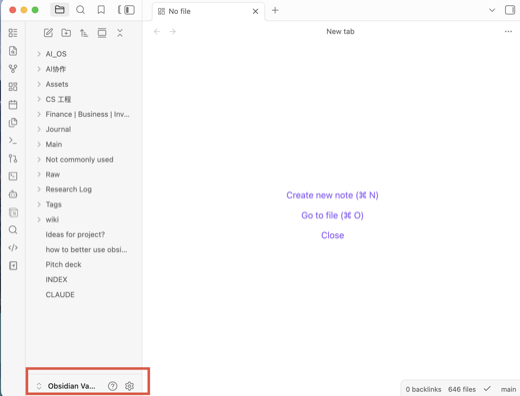
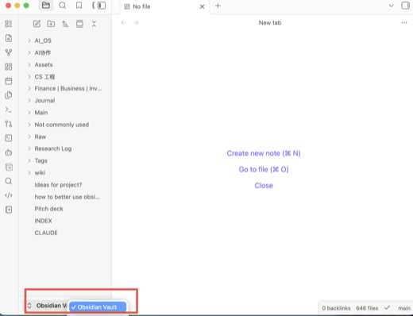

在 B 站 CC 字幕视频上，一键将字幕保存为 Obsidian 笔记。
完成下方设置只需 1 分钟。
按以下两步找到你的 Vault 名称：
打开 Obsidian，查看左下角的 Vault 按钮（红框位置）

点击它，弹出的蓝色高亮名称就是你的 Vault 名称。
Obsidian 默认是 "Obsidian Vault"，如果你改过就是你自己设定的名字。

看完不超过 2 分钟，包含完整演示